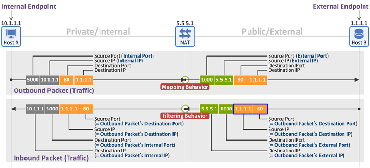

NAT Behavioral Requirements, as Defined by the IETF (RFC 4787) - Part 2. Filtering Behavior
September 23, 2013 | By Netmanias (tech@netmanias.com)
|
Now that we learned a NAT's mapping behaviors last time, below we will study its filtering behaviors as defined in RFC 4787.
For information about the terms used below (Internal Endpoint, External Endpoint, Outbound Traffic, Inbound Traffic, and so on), please see their definitions presented in the previous post.

2. Filtering Behavior
If the previous post was about mapping outbound packets, this one is about filtering inbound packets. That is, last time we discussed how a NAT maps/translates the external port of an outbound packet based on the destination IP and destination port values of the packet. This time, we focus on how a NAT, when receiving an inbound packet, filters the packet based on the Source IP and Source Port values (in the blue-lined box above) of the packet and determines whether to PASS it on to the Internal Endpoint or to DROP it.
Endpoint-Independent Filtering
In "Endpoint-Independent Filtering", the Endpoint refers to an External Endpoint.
"Endpoint-Independent Filtering" checks only the i) destination IP and ii) destination port of an inbound packet sent by an External Endpoint to decide whether to pass the packet or not. Thus, it doesn't care about the values of the source IP or source port of the External Endpoint (i.e. any IPs and ports are OK). That is, External Endpoint information (source IP & source port) of packets are not considered if they are inbound.
In the figure below, the following binding and filtering entries are generated when a packet is sent by Host A to Host B:
- Binding Entry: {Internal IP : Internal Port} <-> {External IP : External Port} = {10.1.1.1:5000} <-> {5.5.5.1 : 1000}
- Filtering Entry: Allow if Inbound Packet {Any IP : Any Port} to {5.5.5.1 : 1000}
The NAT passes any inbound packets sent by Host B or Host C to Host A as long as their destination IP and destination Port are 5.5.5.1 and 1000, regardless of their source IP (1.1.1.1 or 2.2.2.2) or source Port (80 or 8080).

Address-Dependent Filtering
In "Address-Dependent Filtering", the Address refers to the source IP address of the External Endpoint.
"Address-Dependent Filtering" checks only the i) destination IP, ii) destination port and iii) source IP of an inbound packet sent by an External Endpoint to decide whether to pass the packet or not. It doesn't care about the values of the source port of the External Endpoint (i.e. any ports are OK). Thus, only those from the External Endpoint, which was the destination of a previous outbound packet sent by an Internal Endpoint, are passed.
In the figure below, the following binding and filtering entries are generated when a packet is sent by Host A to Host B:
- Binding Entry: {Internal IP : Internal Port} <-> {External IP : External Port} = {10.1.1.1:5000} <-> {5.5.5.1 : 1000}
- Filtering Entry: Allow if Inbound Packet {1.1.1.1 : Any Port} to {5.5.5.1 : 1000}
The NAT passes the inbound packet (i.e. the one with destination IP/destination port = 5.5.5.1/1000) sent by Host B (source IP = 1.1.1.1), and drops the one sent by Host C (source IP = 2.2.2.2). At this time, the source port values are not considered.

Address and Port-Dependent Filtering
In "Address and Port-Dependent Filtering", the Address and Port refer to the address and port of an External Endpoint (source IP & source port).
"Address and Port-Dependent Filtering" checks the i) destination IP, ii) destination port, iii) source IP and iv) source port of an inbound packet sent by an External Endpoint to decide whether to pass the packet or not. Only those sent as a response to the outbound packet that an Internal Endpoint previously sent (i.e. ones with all four matching values) are passed.
In the figure below, the following binding and filtering entries are generated when a packet is sent by Host A to Host B:
- Binding Entry: {Internal IP : Internal Port} <-> {External IP : External Port} = {10.1.1.1:5000} <-> {5.5.5.1 : 1000}
- Filtering Entry: Allow if Inbound Packet {1.1.1.1 : 80} to {5.5.5.1 : 1000}
The NAT passes only the packet sent as a response {i.e. 1.1.1.1:80 to 5.5.5.1:1000} to the outbound packet that Host A sent to Host B earlier {i.e. 5.5.5.1:1000 to 1.1.1.1:80}, and drops all other packets.

|
According to RFC 4787, NATs using Endpoint-Independent Filtering or Address-Dependent Filtering can do peer-to-peer communication through Interactive Connectivity Establishment (ICE, RFC 5245). However, for ones using Address and Port Dependent Mapping AND Address and Port-Dependent Filtering, peer-to-peer communication is not possible. Hence it is inevitable for all traffic to pass through a relay server (TURN server).
3. Hairpinning Behavior
Hairpinning allows two Internal Endpoints located behind the same NAT to communicate with each other through the NAT. Most common examples will be Skype. When using these applications, two mobile devices can communicate with each other through an Large Scale NAT (LSN, also called Carrier Grade NAT (CGN)) employed on a 3G/LTE network.
There are two types of Hairpinning behavior as follows:
External Source IP Address and Port
Consider the following packet sent by Host A to Host B (and received by a NAT):
- Destination IP = the External Address of Host B (5.5.5.2)
- Destination Port = the External Port of Host B (1001)
- Source IP = the Internal Address of Host A (10.1.1.1)
- Source Port = the Internal Port of Host A (5000)
When the NAT receives the packet, it passes the packet on to Host B after modifying it as follows by referring to the binding table. What should be noted here is that now the External Address and Port of Host A are used as the source IP and source port.
- Destination IP = the Internal Address of Host B (10.1.1.2)
- Destination Port = the Internal Port of Host B (5001)
- Source IP = the External Address of Host A (5.5.5.1)
- Source Port = the External Port of Host A (1000)
The foregoing case can be considered as an ideal NAT behavior in that Host A (sender) receives a response packet (source IP/port=5.5.5.2/1001) from the destination IP/port (5.5.5.2/1001) of the packet that it sent earlier. Thus, no problem in communicating between the two.
Although Host A and Host B have different External Addresses (5.5.5.1 and 5.5.5.2) in the figure below, they may have the same value depending on how the NAT behaves.

Internal Source IP Address and Port
Again, consider the same packet sent by Host A to Host B (and received by a NAT).
When the NAT receives the packet, it passes the packet on to Host B after modifying it as follows by referring to the binding table. What is different from the previous packet is that now the Internal Address and Port of Host A are used as the source IP and source port.
- Destination IP = the Internal Address of Host B (10.1.1.2)
- Destination Port = the Internal Port of Host B (5001)
- Source IP = the Internal Address of Host A (10.1.1.1)
- Source Port = the Internal Port of Host A (5000)
In this case, Host A (sender) receives a response packet (source IP/port=10.1.1.2/5001), which is not from the destination IP/port (5.5.5.2/1001) of the packet that it sent earlier. Therefore, the packet is dropped in the kernel's TCP/IP stack.

|